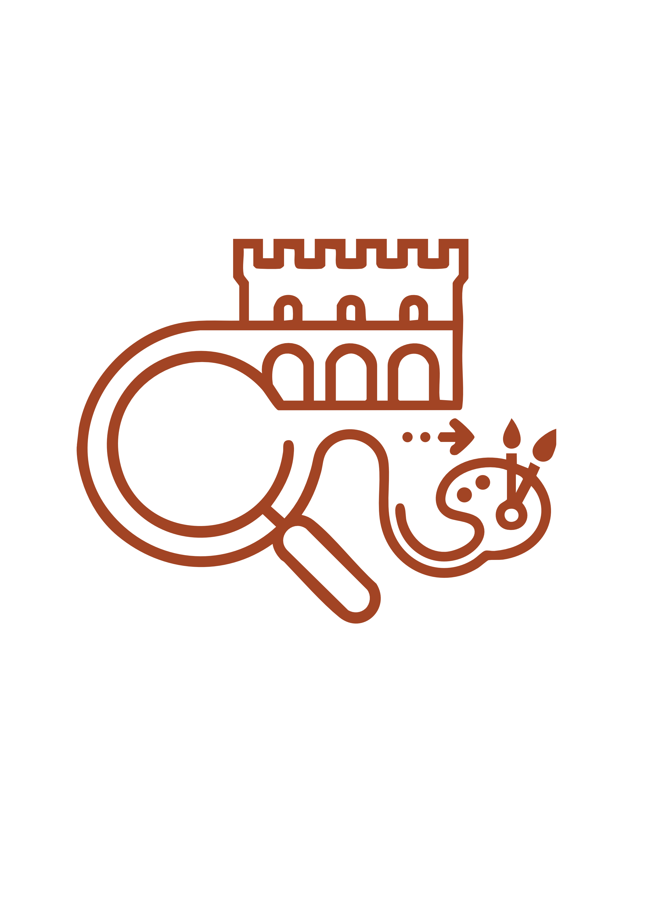

Un viaggio immersivo attraverso i luoghi storici della città fino al cuore pulsante dell'arte.
Il punto di partenza del nostro viaggio. Un luogo iconico che segna l'ingresso al centro storico di Perugia, dove l'antico e il moderno si incontrano.
Una terrazza panoramica mozzafiato che offre una vista impareggiabile sulle colline umbre. Un luogo di ispirazione per poeti e artisti.
Il cuore pulsante di Perugia. Con la maestosa Fontana Maggiore e la Cattedrale di San Lorenzo, rappresenta la massima espressione dell'arte e della storia cittadina.
Una delle sedi storiche dell'Accademia di Belle Arti. Qui l'arte prende forma tra laboratori, aule studio e spazi creativi dedicati agli studenti.
L'apice del nostro percorso. La meravigliosa sede monumentale dell'Accademia, un capolavoro architettonico restituito alla città e all'arte.
Scopri il tesoro nascosto dell'Accademia di Belle Arti di Perugia. Una collezione che custodisce opere di inestimabile valore, testimoniando secoli di storia dell'arte umbra e italiana.